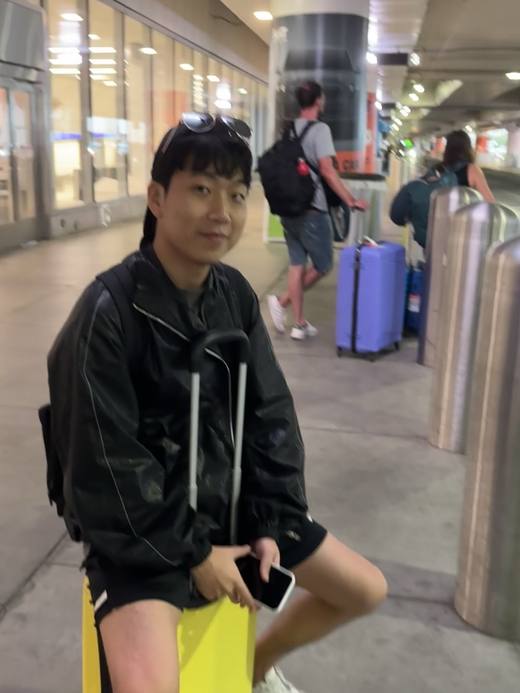
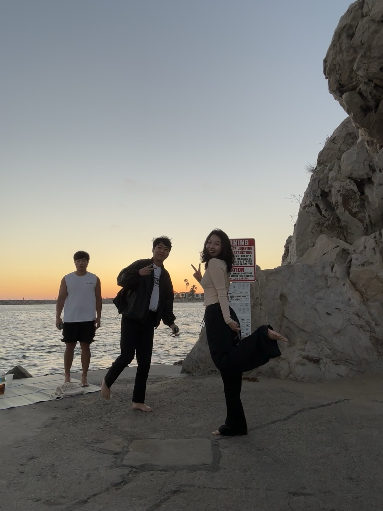

About Me
I am a UX Designer and Researcher with a passion for understanding people and creating thoughtful, user-centered experiences. My journey in design started with a deep appreciation for diverse perspectives, nurtured through experiences across bio-technology, art, and curation. At the University of Michigan, I’m pursuing a double major in Art & Design and Information, where I blend data-driven strategies with creative intuition.
I enjoy capturing the world through photography and exploring how visuals can enhance storytelling.

